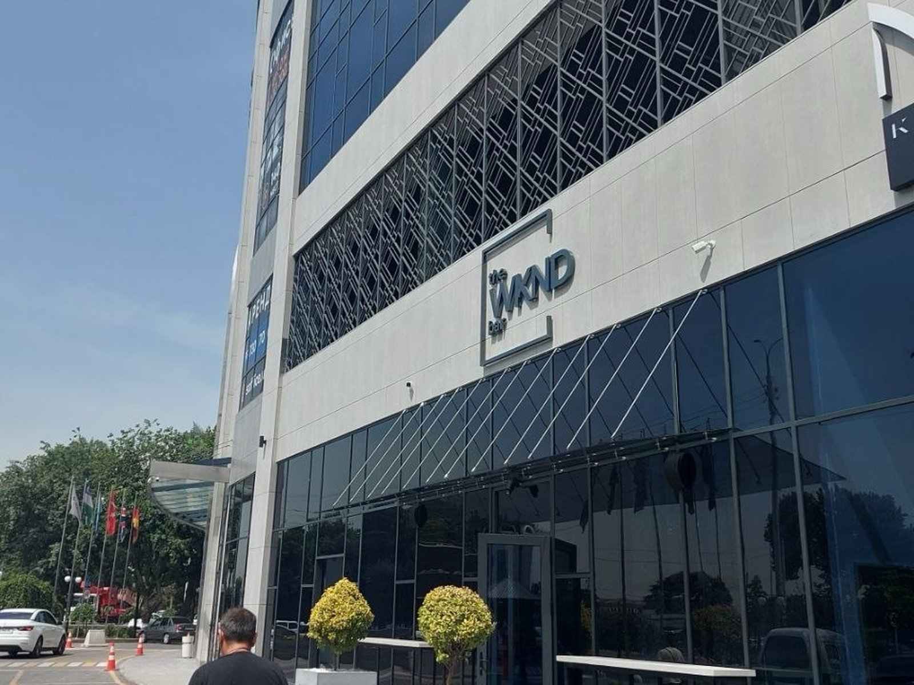
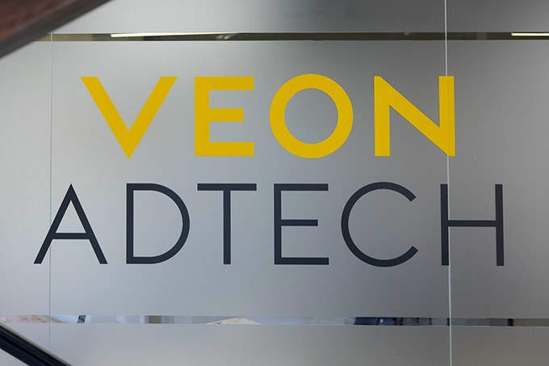

My last week at VEON AdTech

I have five days left at VEON AdTech. I started in January as an intern, a Python developer with a couple of side projects and no idea what real production data looks like. Now I have some idea.
What I learned
Most of my time went into automating data workflows over 20M+ customer records for retention modelling. With that many rows a small mistake isn't small anymore. A wrong join or a null you didn't notice doesn't throw an error. It just gives somebody a wrong number that they trust. So I learned to check the data before I trust my own code.
Two other things stuck. A script that someone else can run without asking me is worth more than a clever one only I understand. And ask early: every time I sat on a question for a day, the answer took two minutes.

What's next
This week I hand over my work and thank the people who taught me, and then I move on. I don't know exactly what's next yet, only that I want bigger problems and more responsibility.
Thanks, VEON AdTech, for my first real job.